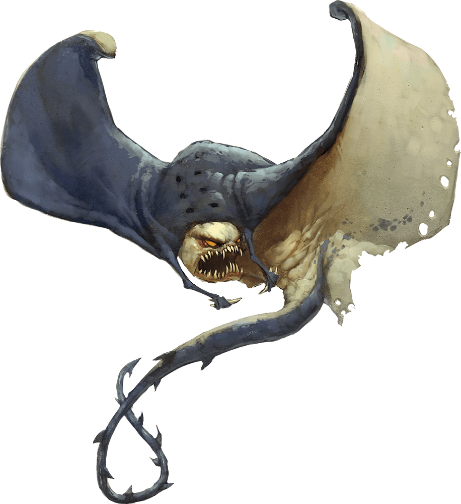

Cloaker
Cloakers earned their names for the resemblance they bear to dark leathery cloaks. Lurking in remote dungeons and caves, these stealthy predators wait to slay lone or injured prey stumbling through the darkness.

Camouflaged Lurkers. Like a stingray, a cloaker's body is composed of cartilage and muscle. With its tail and fins unfurled, it flies through darkness and lurks among the shadows of caverns the same way a stingray glides through water and hides on the ocean floor. Parallel rows of round, black eyespots run along its back like buttons, and the ivory-colored claws on its cowl resemble bone clasps.
When a cloaker unfurls and moves to attack, it reveals its pale underside and makes its true nature evident. Red eyes glow above rows of sharp teeth, and a long pendulous tail whips behind it.
Opportunistic Predators. When hunting, cloakers glide through the shadows at a safe distance behind groups of other creatures traversing the Underdark. They follow parties of humanoids to prey on the wounded after a battle, or pursue herds of Underdark beasts, attacking the sick, the weak, or the straggling.
Cloakers strike quickly and consume their meals as swiftly as possible, enveloping and devouring their victims. While it feeds, a cloaker uses its swift, whiplike tail for defense, although it rarely takes a stand against dangerous foes or groups of creatures. As an added defense, cloakers can create illusory duplicates of themselves.
Haunting Moan. Cloakers' thoughts are alien to other life-forms, and they communicate with one another through subsonic moans inaudible to most creatures. At higher intensities, a cloaker's haunting moan becomes audible, evoking sensations of doom and dread in creatures that hear it.
Cloaker Conclaves. Cloakers prefer isolation, but they sometimes convene with other cloakers for defense or to exchange information about new dangers, suitable hunting grounds, or developments that might affect their habitats. When this convergence is complete, the cloakers separate again.
Environment
Ruins, Underdark
Token

Cloaker
Large aberration, chaotic neutral
- Armor Class 14 (natural armor)
- Hit Points 78 (12d10 + 12)
- Speed 10 ft., fly 40 ft.
STR DEX CON INT WIS CHA 17 (+3) 15 (+2) 12 (+1) 13 (+1) 12 (+1) 14 (+2)
- Proficiency Bonus +3
- Saving Throws
- Damage Vulnerabilities
- Damage Resistances
- Damage Immunities
- Condition Immunities
- Skills Stealth +5
- Senses darkvision 60 ft.,passive Perception 11
- Languages Deep Speech,Undercommon
- Challenge 8
Damage Transfer. While attached to a creature, the cloaker takes only half the damage dealt to it (rounded down), and that creature takes the other half.
False Appearance. While the cloaker remains motionless without its underside exposed, it is indistinguishable from a dark leather cloak.
Light Sensitivity. While in bright light, the cloaker has disadvantage on attack rolls and Wisdom (Perception) checks that rely on sight.
Actions
Multiattack. The cloaker makes two attacks: one with its bite and one with its tail.
Bite. Melee Weapon Attack: +6 to hit, reach 5 ft., one creature. Hit: 10 (2d6 + 3) piercing damage, and if the target is Large or smaller, the cloaker attaches to it. If the cloaker has advantage against the target, the cloaker attaches to the target's head, and the target is blinded and unable to breathe while the cloaker is attached. While attached, the cloaker can make this attack only against the target and has advantage on the attack roll. The cloaker can detach itself by spending 5 feet of its movement. A creature, including the target, can take its action to detach the cloaker by succeeding on a DC 16 Strength check.
Tail. Melee Weapon Attack: +6 to hit, reach 10 ft., one creature. Hit: 7 (1d8 + 3) slashing damage.
Moan. Each creature within 60 feet of the cloaker that can hear its moan and that isn't an aberration must succeed on a DC 13 Wisdom saving throw or become frightened until the end of the cloaker's next turn. If a creature's saving throw is successful, the creature is immune to the cloaker's moan for the next 24 hours
Phantasms (Recharges after a Short or Long Rest). The cloaker magically creates three illusory duplicates of itself if it isn't in bright light. The duplicates move with it and mimic its actions, shifting position so as to make it impossible to track which cloaker is the real one. If the cloaker is ever in an area of bright light, the duplicates disappear.
Whenever any creature targets the cloaker with an attack or a harmful spell while a duplicate remains, that creature rolls randomly to determine whether it targets the cloaker or one of the duplicates. A creature is unaffected by this magical effect if it can't see or if it relies on senses other than sight.
A duplicate has the cloaker's AC and uses its saving throws. If an attack hits a duplicate, or if a duplicate fails a saving throw against an effect that deals damage, the duplicate disappears.